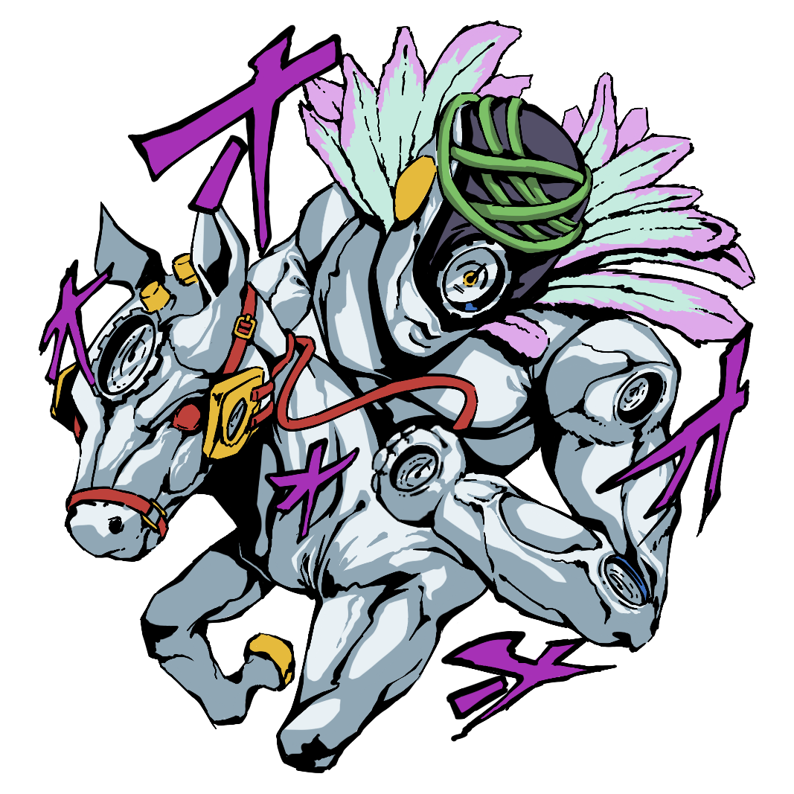

'스톤 오션'이란?
《스톤 오션》은 아라키 히로히코의 일본 만화 《죠죠의 기묘한 모험》의 6부이다. 슈에이샤의 〈주간 소년 점프〉에서 2000년 1월 1일부터 2003년 4월 21일까지 연재됐으며 단행본으로 총 17권으로 엮어 출판됐다. 연재 당시 제목은 《죠죠의 기묘한 모험 제6부: 쿠죠 죠린 (스톤 오션)》이었다. 《황금의 바람》의 후속편이자 원작 시간선의 마지막 작품이며, 이후 리부트 《스틸 볼 런》으로 이어졌다.
배경은 2011년의 플로리다 포트세인트루시로 주인공은 쿠죠 죠타로의 딸이자 그린 돌핀 스트리트 형무소의 15년형 수감자 쿠죠 죠린이다. 어느 날 디오 브란도의 추종자가 죠타로의 스탠드 능력과 기억을 빼앗자, 죠린이 아버지를 구하기 위해 탈옥하고 범인을 추적하는 이야기를 다뤘다.